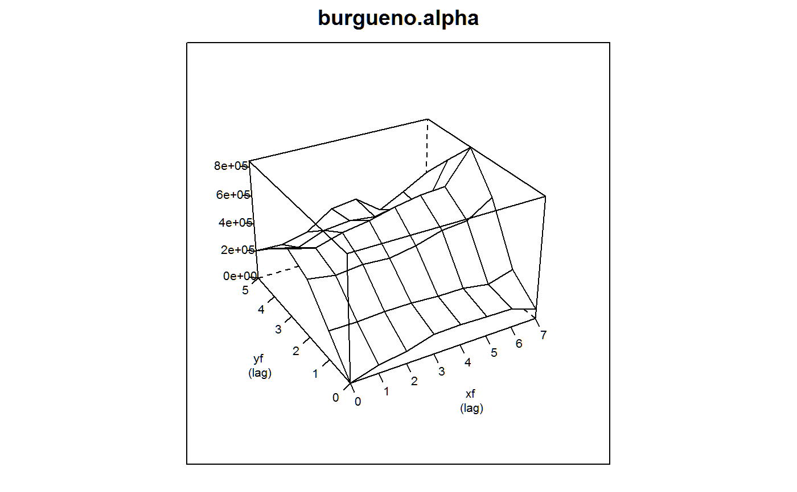
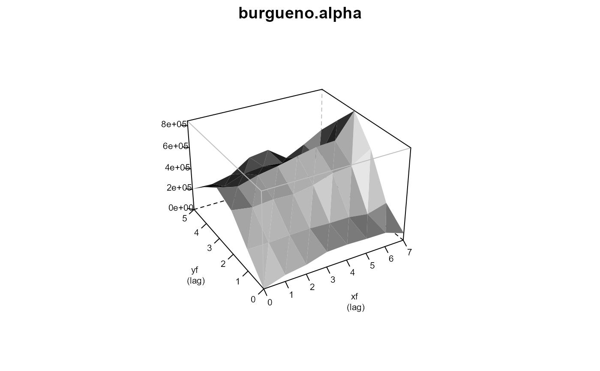

burgueno.alpha.RdIncomplete block alpha design
data("burgueno.alpha")
A data frame with 48 observations on the following 6 variables.
reprep, 3 levels
blockblock, 12 levels
rowrow
colcolumn
gengenotype, 16 levels
yieldyield
A field experiment with 3 reps, 4 blocks per rep, laid out as an alpha design.
The plot size is not given.
Electronic version of the data obtained from CropStat software.
Used with permission of Juan Burgueno.
J Burgueno, A Cadena, J Crossa, M Banziger, A Gilmour, B Cullis. 2000. User's guide for spatial analysis of field variety trials using ASREML. CIMMYT. https://books.google.com/books?id=PR_tYCFyLCYC&pg=PA1
# \dontrun{ library(agridat) data(burgueno.alpha) dat <- burgueno.alpha libs(desplot) desplot(dat, yield~col*row, out1=rep, out2=block, # aspect unknown text=gen, cex=1,shorten="none", main='burgueno.alpha')libs(lme4,lucid) # Inc block model m0 <- lmer(yield ~ gen + (1|rep/block), data=dat) vc(m0) # Matches Burgueno p. 26#> grp var1 var2 vcov sdcor #> block:rep (Intercept) <NA> 86900 294.8 #> rep (Intercept) <NA> 200900 448.2 #> Residual <NA> <NA> 133200 365## grp var1 var2 vcov sdcor ## block:rep (Intercept) <NA> 86900 294.8 ## rep (Intercept) <NA> 200900 448.2 ## Residual <NA> <NA> 133200 365 libs(asreml) if( utils::packageVersion("asreml") > "4") { # asreml4 dat <- transform(dat, xf=factor(col), yf=factor(row)) dat <- dat[order(dat$xf, dat$yf),] # Sequence of models on page 36 m1 <- asreml(yield ~ gen, data=dat) m1$loglik # -232.13 m2 <- asreml(yield ~ gen, data=dat, random = ~ rep) m2$loglik # -223.48 # Inc Block model m3 <- asreml(yield ~ gen, data=dat, random = ~ rep/block) m3$loglik # -221.42 m3$coef$fixed # Matches solution on p. 27 # AR1xAR1 model m4 <- asreml(yield ~ 1 + gen, data=dat, resid = ~ar1(xf):ar1(yf)) m4$loglik # -221.47 plot(varioGram(m4), main="burgueno.alpha") # Figure 1 m5 <- asreml(yield ~ 1 + gen, data=dat, random= ~ yf, resid = ~ar1(xf):ar1(yf)) m5$loglik # -220.07 m6 <- asreml(yield ~ 1 + gen + pol(yf,-2), data=dat, resid = ~ar1(xf):ar1(yf)) m6$loglik # -204.64 m7 <- asreml(yield ~ 1 + gen + lin(yf), data=dat, random= ~ spl(yf), resid = ~ar1(xf):ar1(yf)) m7$loglik # -212.51 m8 <- asreml(yield ~ 1 + gen + lin(yf), data=dat, random= ~ spl(yf)) m8$loglik # -213.91 # Polynomial model with predictions m9 <- asreml(yield ~ 1 + gen + pol(yf,-2) + pol(xf,-2), data=dat, random= ~ spl(yf), resid = ~ar1(xf):ar1(yf)) m9 <- update(m9) m9$loglik # -191.44 vs -189.61 p9 <- predict(m9, classify="gen:xf:yf", levels=list(xf=1,yf=1)) p9 m10 <- asreml(yield ~ 1 + gen + lin(yf)+lin(xf), data=dat, resid = ~ar1(xf):ar1(yf)) m10$loglik # -211.56 m11 <- asreml(yield ~ 1 + gen + lin(yf)+lin(xf), data=dat, random= ~ spl(yf), resid = ~ar1(xf):ar1(yf)) m11$loglik # -208.90 m12 <- asreml(yield ~ 1 + gen + lin(yf)+lin(xf), data=dat, random= ~ spl(yf)+spl(xf), resid = ~ar1(xf):ar1(yf)) m12$loglik # -206.82 m13 <- asreml(yield ~ 1 + gen + lin(yf)+lin(xf), data=dat, random= ~ spl(yf)+spl(xf)) m13$loglik # -207.52 }#> Model fitted using the gamma parameterization. #> ASReml 4.1.0 Thu Jul 30 15:47:44 2020 #> LogLik Sigma2 DF wall cpu #> 1 -232.128 424504.3 32 15:47:44 0.0 #> Model fitted using the gamma parameterization. #> ASReml 4.1.0 Thu Jul 30 15:47:44 2020 #> LogLik Sigma2 DF wall cpu #> 1 -226.562 282408.0 32 15:47:44 0.0 #> 2 -225.458 258453.6 32 15:47:44 0.0 #> 3 -224.388 235077.8 32 15:47:44 0.0 #> 4 -223.676 216846.8 32 15:47:44 0.0 #> 5 -223.503 209444.3 32 15:47:44 0.0 #> 6 -223.483 206934.7 32 15:47:44 0.0 #> 7 -223.482 206516.9 32 15:47:44 0.0 #> Model fitted using the gamma parameterization. #> ASReml 4.1.0 Thu Jul 30 15:47:44 2020 #> LogLik Sigma2 DF wall cpu #> 1 -225.610 246800.7 32 15:47:44 0.0 #> 2 -223.872 199712.8 32 15:47:44 0.0 #> 3 -222.453 162923.0 32 15:47:44 0.0 #> 4 -221.644 140326.6 32 15:47:44 0.0 #> 5 -221.443 135401.9 32 15:47:44 0.0 #> 6 -221.417 133560.7 32 15:47:44 0.0 #> 7 -221.417 133229.8 32 15:47:44 0.0 #> Model fitted using the gamma parameterization. #> ASReml 4.1.0 Thu Jul 30 15:47:44 2020 #> LogLik Sigma2 DF wall cpu #> 1 -229.632 369295.0 32 15:47:44 0.0 #> 2 -225.313 310549.6 32 15:47:44 0.0 #> 3 -222.576 315026.1 32 15:47:44 0.0 #> 4 -221.714 350768.1 32 15:47:44 0.0 #> 5 -221.498 390126.2 32 15:47:44 0.0 #> 6 -221.475 406435.9 32 15:47:44 0.0 #> 7 -221.473 412526.0 32 15:47:44 0.0 #> 8 -221.472 414688.0 32 15:47:44 0.0#> Model fitted using the gamma parameterization. #> ASReml 4.1.0 Thu Jul 30 15:47:45 2020 #> LogLik Sigma2 DF wall cpu #> 1 -226.301 279679.7 32 15:47:45 0.0 #> 2 -223.503 233517.8 32 15:47:45 0.0 #> 3 -221.336 202245.4 32 15:47:45 0.0 #> 4 -220.254 181270.7 32 15:47:45 0.0 #> 5 -220.081 172053.0 32 15:47:45 0.0 #> 6 -220.068 170878.3 32 15:47:45 0.0 #> 7 -220.068 170961.0 32 15:47:45 0.0#> Warning: Some components changed by more than 1% on the last iteration.#> Model fitted using the gamma parameterization. #> ASReml 4.1.0 Thu Jul 30 15:47:45 2020 #> LogLik Sigma2 DF wall cpu #> 1 -205.690 156958.0 30 15:47:45 0.0 #> 2 -205.189 156511.0 30 15:47:45 0.0 #> 3 -204.651 170349.2 30 15:47:45 0.0 #> 4 -204.640 171539.3 30 15:47:45 0.0 #> 5 -204.639 171955.1 30 15:47:45 0.0#> Warning: Some components changed by more than 1% on the last iteration.#> Model fitted using the gamma parameterization. #> ASReml 4.1.0 Thu Jul 30 15:47:45 2020 #> Spline: design points closer than 0.0005 have been merged. #> LogLik Sigma2 DF wall cpu #> 1 -213.764 161236.1 31 15:47:45 0.0 #> 2 -213.161 158001.3 31 15:47:45 0.0 #> 3 -212.686 158486.3 31 15:47:45 0.0 #> 4 -212.518 161586.3 31 15:47:45 0.0 #> 5 -212.512 160691.0 31 15:47:45 0.0#> Warning: Some components changed by more than 1% on the last iteration.#> Model fitted using the gamma parameterization. #> ASReml 4.1.0 Thu Jul 30 15:47:45 2020 #> Spline: design points closer than 0.0005 have been merged. #> LogLik Sigma2 DF wall cpu #> 1 -214.401 162571.5 31 15:47:45 0.0 #> 2 -214.190 158323.8 31 15:47:45 0.0 #> 3 -214.000 153413.7 31 15:47:45 0.0 #> 4 -213.916 149071.2 31 15:47:45 0.0 #> 5 -213.914 148249.7 31 15:47:45 0.0 #> Model fitted using the gamma parameterization. #> ASReml 4.1.0 Thu Jul 30 15:47:45 2020 #> Spline: design points closer than 0.0005 have been merged. #> LogLik Sigma2 DF wall cpu #> 1 -192.357 124656.6 28 15:47:45 0.0 (1 restrained) #> 2 -191.606 114513.8 28 15:47:45 0.0 #> 3 -191.493 114311.7 28 15:47:45 0.0 #> 4 -191.452 115391.7 28 15:47:45 0.0 #> 5 -191.446 114966.4 28 15:47:45 0.0#> Warning: Some components changed by more than 1% on the last iteration.#> Model fitted using the gamma parameterization. #> ASReml 4.1.0 Thu Jul 30 15:47:45 2020 #> Spline: design points closer than 0.0005 have been merged. #> LogLik Sigma2 DF wall cpu #> 1 -191.443 115328.5 28 15:47:45 0.0 #> 2 -191.443 115251.7 28 15:47:45 0.0#> Warning: Some components changed by more than 1% on the last iteration.#> Model fitted using the gamma parameterization. #> ASReml 4.1.0 Thu Jul 30 15:47:45 2020 #> Spline: design points closer than 0.0005 have been merged. #> LogLik Sigma2 DF wall cpu #> 1 -191.442 115160.3 28 15:47:45 0.0 #> 2 -191.442 115178.5 28 15:47:45 0.0 #> 3 -191.442 115210.1 28 15:47:45 0.0 #> Model fitted using the gamma parameterization. #> ASReml 4.1.0 Thu Jul 30 15:47:45 2020 #> LogLik Sigma2 DF wall cpu #> 1 -218.438 319937.6 30 15:47:45 0.0 #> 2 -214.809 284438.5 30 15:47:45 0.0 #> 3 -212.478 301889.6 30 15:47:45 0.0 #> 4 -211.749 343343.7 30 15:47:45 0.0 #> 5 -211.575 384479.3 30 15:47:45 0.0 #> 6 -211.559 399834.4 30 15:47:45 0.0 #> 7 -211.557 405022.4 30 15:47:45 0.0 #> Model fitted using the gamma parameterization. #> ASReml 4.1.0 Thu Jul 30 15:47:45 2020 #> Spline: design points closer than 0.0005 have been merged. #> LogLik Sigma2 DF wall cpu #> 1 -210.199 166458.9 30 15:47:45 0.0 #> 2 -209.562 164032.3 30 15:47:45 0.0 #> 3 -209.064 166788.1 30 15:47:45 0.0 #> 4 -208.901 173307.2 30 15:47:45 0.0 #> 5 -208.898 172903.8 30 15:47:45 0.0#> Warning: Some components changed by more than 1% on the last iteration.#> Model fitted using the gamma parameterization. #> ASReml 4.1.0 Thu Jul 30 15:47:45 2020 #> Spline: design points closer than 0.0005 have been merged. #> Spline: design points closer than 0.0007 have been merged. #> LogLik Sigma2 DF wall cpu #> 1 -208.573 135590.1 30 15:47:45 0.0 (1 restrained) #> 2 -207.575 121857.9 30 15:47:45 0.0 #> 3 -207.068 114896.2 30 15:47:45 0.0 #> 4 -206.844 112501.6 30 15:47:45 0.0 #> 5 -206.826 111035.7 30 15:47:45 0.0 #> 6 -206.825 111519.0 30 15:47:45 0.0#> Warning: Some components changed by more than 1% on the last iteration.#> Model fitted using the gamma parameterization. #> ASReml 4.1.0 Thu Jul 30 15:47:45 2020 #> Spline: design points closer than 0.0005 have been merged. #> Spline: design points closer than 0.0007 have been merged. #> LogLik Sigma2 DF wall cpu #> 1 -208.583 129506.5 30 15:47:45 0.0 #> 2 -208.160 124731.6 30 15:47:45 0.0 #> 3 -207.765 118920.6 30 15:47:45 0.0 #> 4 -207.541 113114.9 30 15:47:45 0.0 #> 5 -207.517 111017.9 30 15:47:45 0.0 #> 6 -207.516 110690.9 30 15:47:45 0.0#> [1] -207.5164# }